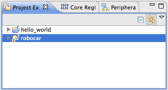

情報処理応用 ー Robocar Programming
複数のプロジェクト
複数のプロジェクトを進める場合、
ファイル名の変更やコードのコメントアウトをするよりも、
あらたにプロジェクトを起こした方がいい。
今期の情報処理応用では、一日ひとつ、
新しいプロジェクトを起こそうと考えている。
- LPCXpresso を立ち上げ、
- robocar プロジェクトを選んでいる状態で、

- 念のため、File メニューからRefresh。
- つづいて File メニューから Rename。

- そのプロジェクトを表す名前に変えて OK ボタン。
ビルドでできあがるバイナリの名前も
"変更したプロジェクトの名前.bin"
になる。
別の課題に取り組むときは再度、
robocar.zip
を import project(s) からインポートする。
robocar を適切な名前に変更し、開発開始。
back